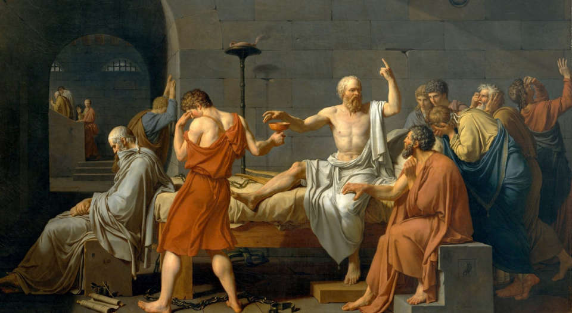

Freedom
The Internet was once a place of exploration and openness. How can we reclaim that spirit?

Creativity
Technology can be a canvas for creativity. How will you use it to express yourself?
Autonomy
Take control of your data, your tools, and your time. Build a web that works for you.
